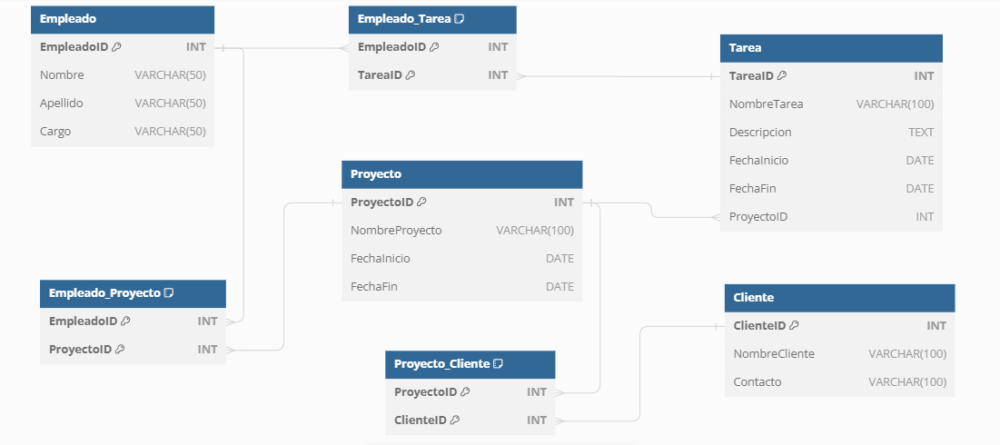

CleyverQuiroz Martínez
Redes de Cómputo · Desarrollo Web · Bases de Datos · Análisis de Datos
Tecnólogo graduado en Gestión de Sistemas de Información y Redes de Cómputo — Universidad del Sinú, Cartagena. Experiencia en redes Cisco, desarrollo web, bases de datos y análisis de datos.
sobre mí
¿Quién soy?
Soy Tecnólogo graduado en Gestión de Sistemas de Información y Redes de Cómputo de la Universidad del Sinú — Cartagena. Cuento con experiencia práctica en desarrollo web, bases de datos, análisis de datos y redes de cómputo bajo estándares Cisco.
Durante mi práctica formativa en la Dirección de Biblioteca de la Universidad del Sinú, desarrollé módulos de un sistema web real usando PHP, MySQL, JavaScript y arquitectura MVC. Me caracterizo por aprender rápido, trabajar en equipo y siempre buscar la solución más limpia y eficiente.
habilidades
Habilidades técnicas
proyectos
Proyectos desarrollados

certificaciones
Certificaciones y cursos
contacto
Hablemos 👋
¡Hola! Soy Cleyver, tecnólogo recién graduado con ganas de aprender y aportar en redes, desarrollo web o análisis de datos. Si crees que puedo ser parte de tu equipo, me encantaría hablar contigo.